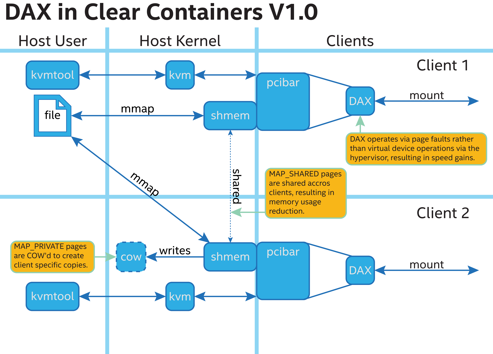

Intel® Clear Containers
Introduction
Intel® Clear Containers is a collection of tools, configurations, and techniques anchored on an implementation that leverages Intel® Architecture to optimize container launching and execution workflow. These optimizations improve speed, size, and efficiency while offering a number of benefits that can be derived only from hardware-backed virtual machines (hardware-enforced isolation and security, for example) on Intel® VT technology.
These methods are applied across all levels of the host/virtual machine hierarchy: from the host-side userland software stack down through the host Linux* kernel, and into the client-side kernel and userland.
Although it is available as a standalone offering, the Clear Containers technology works best when it is able to leverage optimizations designed into the Clear Linux Project.
Customers can integrate all or parts of Intel Clear Containers into a container infrastructure.
Architecture Overview
Intel Clear Containers are architected around the Linux Kernel Virtual Machine virtualization infrastructure to make best use of Intel Architecture VT features. Operational speed gets improved and overhead gets reduced by optimizing existing code, removing redundant components, and implementing new techniques for containers with KVM.
Version 1.0 of Clear Containers was designed as a lightweight container
system based around kvmtool‘s lkvm,
KVM and Intel VT-x features; the
initial version was aimed primarily at Docker* integration. Version
2.0 replaces lkvm with a lightweight version of
QEMU (link).
Version 2.0 also expands the feature set to include key technologies, such as SR-IOV, and the Open Container Initiative runtime API.
V1.0
V1.0 (also known as Intel® Clear Containers for Docker Engine) is based around kvmtool, with example host integrations for Docker and rkt.
Host kernel optimizations
Intel Clear Containers operate better when a number of host kernel features and optimizations are applied:
Enabling Kernel Samepage Merging in the host kernel is recommended for efficient page sharing of VM pages. Kernel documentation can be found in Documentation/vm/ksm.txt Config symbol:
CONFIG_KSMUsing a kernel version >= v4.0 (or backporting appropriate patches if your kernel version is less than v4.0), to get the best KVM VM startup times
Note
Intel Extended Page Table acceleration will be automatically detected and used by your host kernel if supported by your hardware. You can check whether this feature is present by looking for the
eptstring in the/proc/cpuinfoof your system. See mmu.txt for more details.
Host user space
Intel Clear Containers V1.0 host user space is based around kvmtool as a fast and lightweight hypervisor. Optimizations to kvmtool include:
- File access, enabling efficient shmem / pci-bar / Direct Access file access to client.
- Less verbosity.
- Minimal UART scanning to improve speed.
- TSC timer functionality changes passing the client apic timer calibration step speeds up container creation time.
- Adding ability to skip unused features, (such as creation of a custom rootfs).
- Removing need for BIOS saves boot time.
- No bootloader required speeds up initial booting of a machine.
- Direct kernel boot – The hypervisor can boot the kernel directly as an uncompressed ELF binary. Although the kernel image is slightly larger than a compressed one, it is faster to read and boot the larger file than it is to uncompress and boot the slightly smaller file.
Client mini-OS
Intel Clear Containers V1.0 uses an optimized client user space (mini-OS) as its primary launch vehicle to execute workload commands. The mini-OS is built with a Clear Linux distribution that has an optimized configuration for time and space efficiency. The mini-OS includes:
- Minimized
systemdconfiguration - Optimized
libc - Custom AutoFDO settings
- Optimized multi-lib runtime support
- Optimized kernel config (speed and size)
The mini-OS configuration can be modified and rebuilt by customers for their own use cases, which may preclude the need to load further client images.
Client customer images
Intel Clear Containers V1.0 mini-OS workloads can be used to bootstrap further customer images. These customer images would generally be mapped into the client via the host filesystem using 9p, DAX or other filesystem and virtual device interfaces. These customer images could, for example:
- Mount a new subtree containing a payload and execute it.
- Mount a new subsystem and chroot to it for contained execution.
The mini-OS image has been optimized for size and speed. It may be replaced or superseded – in whole or in part – by customer-created images. Keep in mind, of course, that any benefits the mini-OS provides may be lost unless equivalent optimizations exist in the customer-created image, or have been migrated into the image they create.
V2.0
Intel Clear Containers V2.0 adopts an optimized version of the established QEMU host virtualization engine, in order to support extra features not found in Clear Containers V1.0. Clear Containers. V2.0 is also compatible with the OCI runtime-specification standard, introducing a host-side abstraction tool to ease host-side integration and to isolate integration instances from future changes to the underlying Clear Containers architecture.

Host kernel optimizations
V2.0 host kernel optimizations are currently the same as the V1.0 optimizations.
Host user space
Host user space is based around an optimized version of QEMU called
qemu-lite, with an OCI
runtime-compliant wrapper called cor.
Our version of qemu-lite has the following modifications:
- DAX support, enabling fast and space efficient file access through zero-copy mapping and multi-container sharing of raw client filesystem images from the host filesystem.
- Reduced “slimline” PC model to reduce startup costs in both QEMU and the client kernel.
- Removed need for BIOS, saving boot time.
- No bootloader requirement, to speed up boot.
- Reduced memory footprint by disabling memory-hungry features that are not required by the client system.
- Direct kernel boot, allowing fast booting by loading the kernel as an uncompressed ELF binary. Although the kernel image is slightly larger than a compressed one, it is faster to read and boot the larger file than it is to uncompress and boot the slightly smaller file.
- Added an OCI runtime-compliant
wrapper, AKA
cor, for easier integration with OCI-compliant host orchestration systems.
Client mini-OS
The Client mini-OS is based on the same Clear Linux OS-based system as used in Intel Clear Containers V1.0; however, it may be built from more recent versions and with more current components, such as the kernel version.
Client customer images
Client customer images are supported in the same manner as they are in V1.0.
Architectural component details
Host kernel components
Kernel SamePage Merging
Linux Kernel Documentation: Documentation/vm/ksm.txt
KSM allows the kernel to locate and merge (share) identical memory pages within the system, even when they are not sourced from the same binary. When sourced from the same binary, the kernel will naturally share through the copy-on-write method.
KSM also allows the kernel to localize and to coalesce pages from within virtual machine memory spaces that would not normally be shared, thus saving memory space.
To enable KSM, check that your host kernel
config includes CONFIG_KSM, and that your host system is running the
ksmd daemon.
EPT
Linux Kernel Documentation: Documentation/virtual/kvm/mmu.txt
EPT is an acceleration technology for virtual
machine memory mappings. It reduces the number of Virtual Machine Manager
entry/exits from the host system, thus improving system performance. If your
hardware system supports EPT, you’ll see the
ept feature listed in the /proc/cpuinfo information from your system.
The kernel, KVM and QEMU will
automatically use and benefit from EPT
when supported by your system hardware.
You can also check on the Intel ARK website to see if your Intel CPU supports Intel VT-x with Extended Page Tables; check under the Advanced Technologies table on the specific page for your CPU.
KVM startup optimizations
Host kernel startup was optimized before the Linux kernel v4.0
release by removing some unnecessary synchronize_rcu() calls. You
should ensure your kernel is at least v4.0, or that you have backported
any appropriate patches to your host kernel: the synchronize_rcu() opt,
at the very least.
Host tooling
Kvmtool
Kvmtool is used in Intel Clear Containers V1.0 for virtual machine configuration and management. It was chosen because it is lighter and faster than the alternatives, and it’s also easy to modify.
Modifications to kvmtool include:
- Implementation of copy-free DAX file-system access.
- Less verbosity.
- Minimal UART scanning to improve speed.
- TSC timer functionality changes passing the client apic timer calibration step speeds up container creation time.
- Adding ability to skip unused features, (such as creation of a custom rootfs).
- Removing need for BIOS saves boot time.
- No bootloader required speeds up initial booting of a machine.
- Direct kernel boot – The hypervisor can boot the kernel directly as an uncompressed ELF binary. Although the kernel image is slightly larger than a compressed one, it ends up being faster to read and boot the larger file than it is to uncompress and boot the slightly smaller file.
qemu-lite
qemu-lite is a modified version of QEMU used for the virtual
machine configuration and management in Intel Clear Containers 2.0.
The modifications made beyond generic QEMU are described in the following sections:
DAX enablement
DAX enablement under qemu-lite utilizes
existing QEMU nvdimm memdev functionality.
PC-lite
A new QEMU PC model, called ‘pc-lite’, has been added that removes all unused or unnecessary PC style elements from the machine emulation that are not required for the client VM. This improves both speed of execution and memory footprint.
Cor
Cor (the Clear OCI runtime manager)
implements the OCI runtime specification
atop of the V2.0 infrastructure (such as qemu-lite). By
utilizing Cor, your OCI-compliant system
can be implemented with Clear Containers whilst also insulating
the user against any future underlying changes in Clear Containers,
thus allowing easier future integration of upgrades. Cor currently
supports OCI runtime version 0.6.0.
Client components
The client-side components consist of the mini-OS kernel and root filesystem, and optionally further customer specific items, such as a further fuller distribution or system to load. The intention is that customers may either extend and expand the mini-OS as required, or they can use the mini-OS to further load a complete self-contained image of their choice.
Client mini-OS
The mini-OS is an optimized version of Clear Linux OS for Intel Architecture which has been designed for the fastest and smallest container boot. The mini-OS consists of a Linux kernel image and root filesystem image.
Kernel – The mini-OS’s kernel is a Clear Linux kernel containing the minimum feature set required to boot the client container. The kernel has optimized for space and speed. This kernel can be modified and re-built as desired, for specific requirements.
DAX – The Direct Access filesystem. (Linux Kernel Documentation:
Documentation/filesystems/dax.txt). Mapping host-side files into the memory map of the client allows the use of DAX to directly mount those files, bypassing the client side page cache and the virtual device mechanisms between host and client. This allows efficient zero-copy mapping and replaces costly virtual device manipulations with efficient page fault handling, thus being faster and more space-efficient than other filesystem mount methods. DAX is enabled in Intel Clear Containers V1.0 using a shmem PCI-BAR mechanism configured by kvmtool.DAX is enabled in Intel Clear Containers V2.0 using an NVDIMM QEMU memdev mechanism:
DAX can only be used to mount single flat files from the host side (such as uncompressed filesystems), and not trees of files in the host filesystem. More than one DAX mount can be utilized though. DAX is limited only by the virtual address space available, so it can easily accommodate large file mappings.
DAX support was introduced in v4.0 of the kernel. Also see the qemu-lite section.
Rootfs image – The mini-OS rootfs image is a Clear Linux rootfs. It can execute the client workload and be modified and extended using the bundle method to enable further features as necessary. It can also be used to further execute another client container image, such as a different Linux distribution.
Customer Client images and workloads
Customers may use their own client images by instructing the mini-OS to execute them using the mini-OS workload. Please refer to the Intel Clear Containers integration guide for further detail.
FAQ
Q. “Can I run Clear Containers on any host Linux?”
- A. Yes, any up-to-date or recent Linux host should be able to run Clear
- Containers, as long as the host system kernel contains the necessary features and is configured with the necessary support enabled.
Q. “Do I need to use all of Clear Containers, or can I cherry pick parts?”
- A. You can cherry pick the parts of Clear Containers you need. Some parts
- will make your life generally easier (such as the QEMU wrapper tool
cor) and will help insulate you from future development changes, so you should consider which parts you need for which features. The client side obviously can be quite flexible in its configuration depending on the deployment environment. - Q. “Can I use Clear Containers technology to run other VMs, not just
- container style ones?”
- A. Yes, the underlying mechanisms and accelerations used for Clear
- Containers can be applied to any Virtual Machine setup, not just those that are based around a container style workflow.